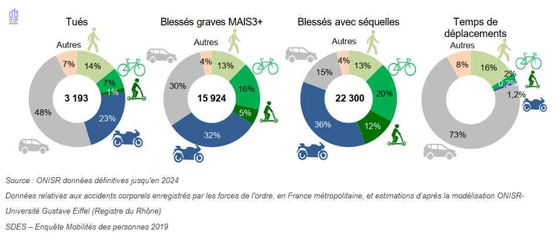

Quelques statistiques générales pour finir !
Lors de ton trajet, tu as pris un certain nombre de risques
Peu importe tes raisons, ces risques auraient tout de même pu te mettre dans des situations
dangereuses,
autant pour toi que pour les autres usagers de la route. De fait, selon le type de transport que tu
utilise, tu peux faire face à des risques plus ou moins importants, en voici quelques chiffres :
Moto :
En 2022, 787 usagers de deux-roues motorisés sont décédés sur les routes de France et 21 448 ont été
victimes d’accidents.
Les manoeuvres principales ayant causées un accident sont les suivantes :
Circulation sans changer de direction
Dépassement ou Déportation
Circulation à contresens
51 % des accidents mortels en deux roues motorisés sont dus à la vitesse
Vélo :
Le risque d’être tué à vélo est plus important que lorsqu’on est piéton ou automobiliste, et croît
fortement à partir de 55 ans.
Les facteurs revenant le plus souvent dans les accident impliquant un cycliste sont :
le non respect des règles de priorité
l’inattention
le changement de file
Trottinette :
En 2019 : 10 décès accidentels dus aux EDPM (engins de déplacement personnel motorisés) sur
l’ensemble
du territoire national
en 2020, 7 décès (contre 178 cyclistes et 391 piétons) dus aux EDPM (engins de déplacement personnel
motorisés) sur l’ensemble du territoire national avec 870 lésions corporelles concernant 774 blessés
ont
été enregistrées
